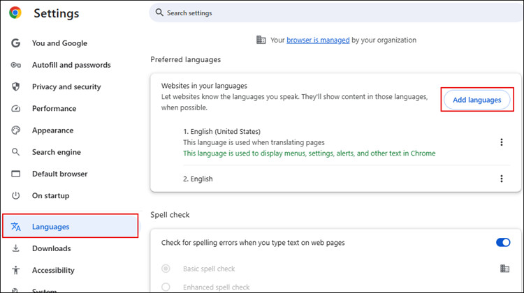
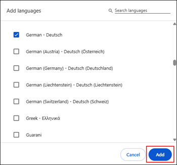
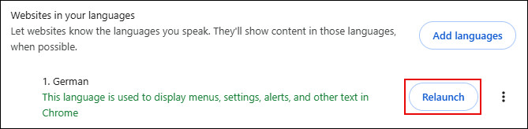

Change the Browser Language to View Date and Time Format
Perform the following steps to change the browser language to view date and time format according to the selected language:
- Open the Chrome browser.
- Navigate to Settings > Languages.
- Select the required language from the list. If the required language is not available, perform the following:
- Click Add languages.

- Select the required language and click Add.

- The added language displays in the list.
- Click next to the required language and select Display Chrome in this language.
- Click Relaunch.

- The Flex client displays the date and time format as per the selected browser language.

If the selected browser language is not supported, the date and time format displays as per the user language configured in the Desigo CC Installed client.